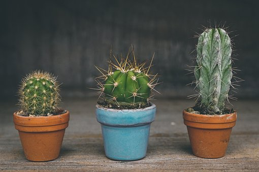
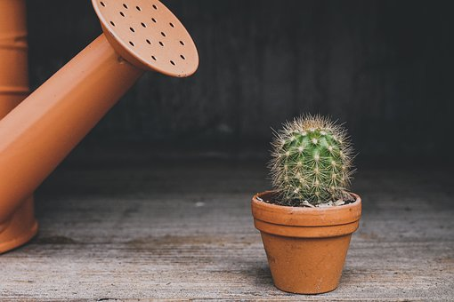
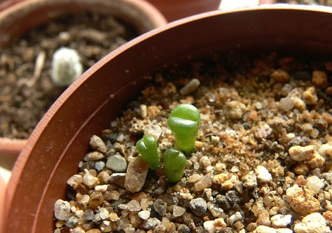

Tips de cultivo
Ubicacion y luz
Es muy importante conocer este aspecto del cultivo. Saber dónde ubicar nuestras plantas desde el momento en que las adquirimos nos puede ahorrar varios problemas como quemaduras, etiolaciones, pudriciones, etc.
Desde ya que los cactus y las suculentas NO SON PLANTAS DE INTERIOR. Lo mejor es encontrar un lugar en exterior.
Riego
Empecemos por aclarar la falsa premisa de que los cactus se riegan poco. Durante la fase de crecimiento principal, de septiembre a marzo, los cactus necesitan buenos riegos. Lo importante es que el sustrato drene bien el agua y que el sustrato se seque entre riegos. Las raíces no deben sufrir excesos de humedad ni falta de aire.
Sustrato
El sustrato es el secreto de la buena salud de los cactus y las suculentas. Un buen sustrato para cactus debe ser bien drenante, bien aireado, bien proporcionado entre sus componentes orgánicos y minerales. Por contraposición: no debe compactarse, no debe permanecer húmedo mucho tiempo, no debe encharcarse. Como componente orgánico lo más recomendado por Cactivas es el mantillo, y como componente mineral la arena gruesa.
